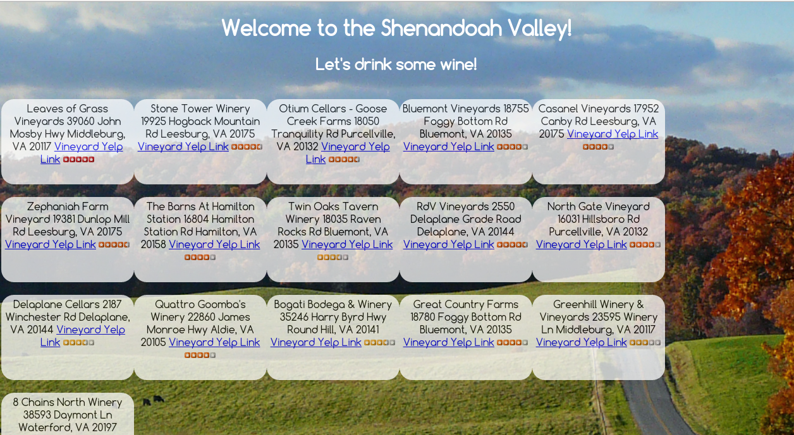

Vineyard Itinerary
Link: https://pacific-plains-7067.herokuapp.com/
This was my third project for General Assembly and the idea was to create a map of vineyards in the Shenandoah Valley and choose to add them to an itinerary so that they could create their own wine tour. It was to incorporate the Google Maps API and the vineyards would come from the Yelp API. I got the Yelp API working, but didn't have much luck plotting the points on Google Maps. The one thing I was proud of was being able to seed my database with the Yelp data by using a "bounding box" function. Since the Shenandoah Valley is not a metropolitan area, I had to define where to look for these vineyards and I'm proud of the results.
